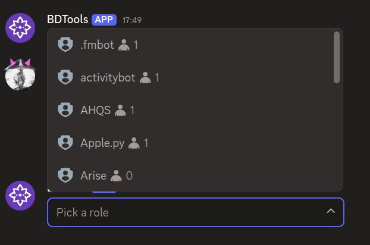
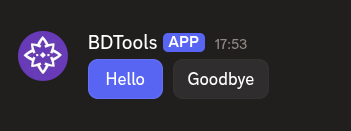

Back to Home
$addActionRow
$addActionRow creates an action row component. Action rows hold interactive components like $addButtonCV2, $addStringSelect, $addUserSelect, $addRoleSelect, and $addMentionableSelect. Action rows can go inside containers.
Syntax
$addActionRow[ID;(Container ID)]ID: a name to identify this action row. Buttons and select menus use this ID to attach themselves.Container ID: optional ID of the container to put this action row inside.
What happens
$addActionRowcreates an action row with the given ID.- You add buttons or select menus to it using
$addButtonCV2or one of the select menu functions. - The action row displays those components in a horizontal row.
Example 1: Action row with a select menu
$addActionRow[roles]
$addRoleSelect[roleMenu;Pick a role;1;1;;roles]
What happens:
$addActionRowcreates an action row.$addRoleSelectadds a role select menu to the action row.
The message shows an action row with a role select menu.
Example 2: Action row with buttons
$addActionRow[buttons]
$addButtonCV2[helloBtn;Hello;primary;;;buttons]
$addButtonCV2[byeBtn;Goodbye;secondary;;;buttons]
What happens:
$addActionRowcreates an action row.- Two
$addButtonCV2calls add two buttons to the action row.
The message shows an action row with two buttons side by side.
Common uses
- Holding buttons that users click to trigger actions
- Holding select menus for choosing users, roles, or options
- Organizing interactive components into horizontal rows
See also
- $addContainer: to create a container for the action row
- $addButtonCV2: to add a button to the action row
- $addStringSelect: to add a string select menu
- $addUserSelect: to add a user select menu
- $addRoleSelect: to add a role select menu
- $addMentionableSelect: to add a mentionable select menu